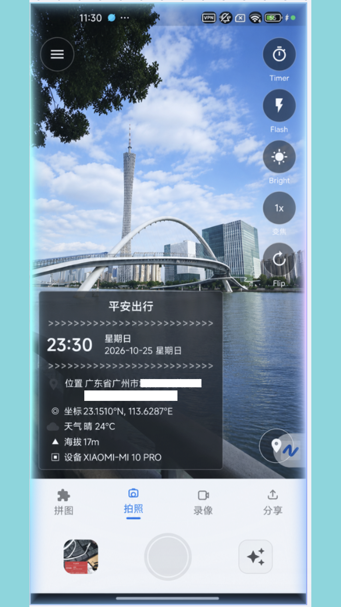
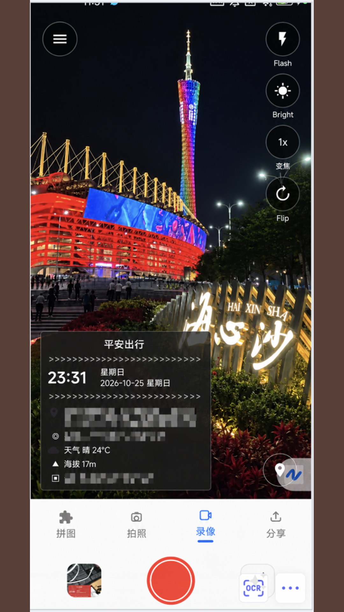
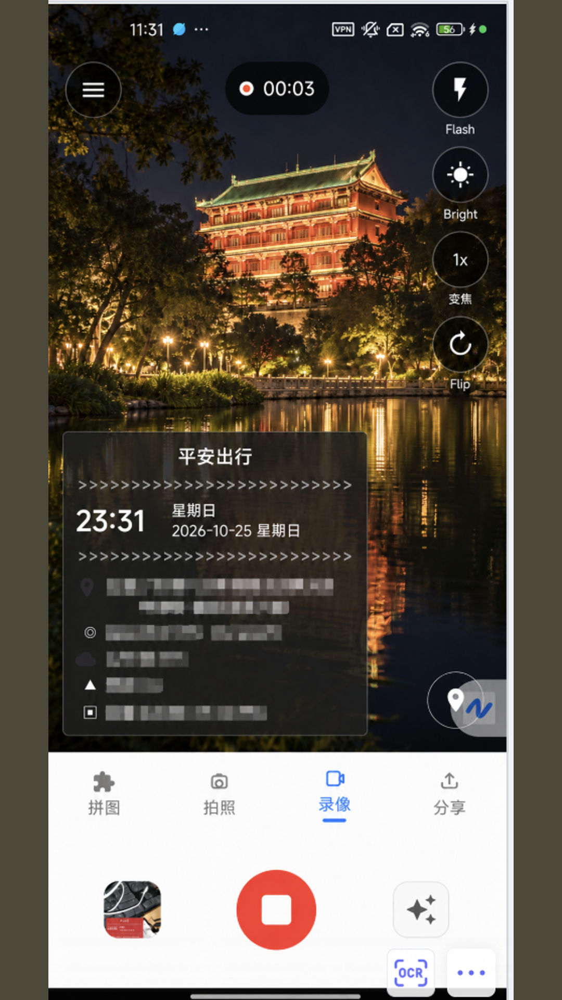
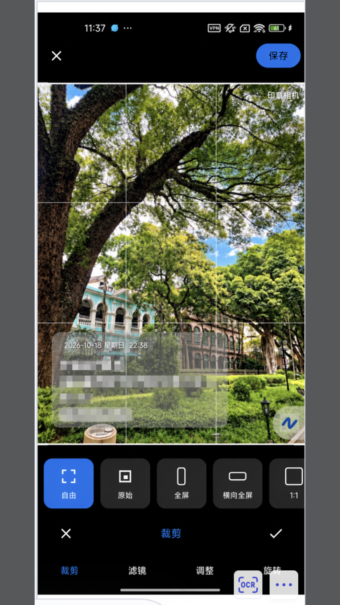
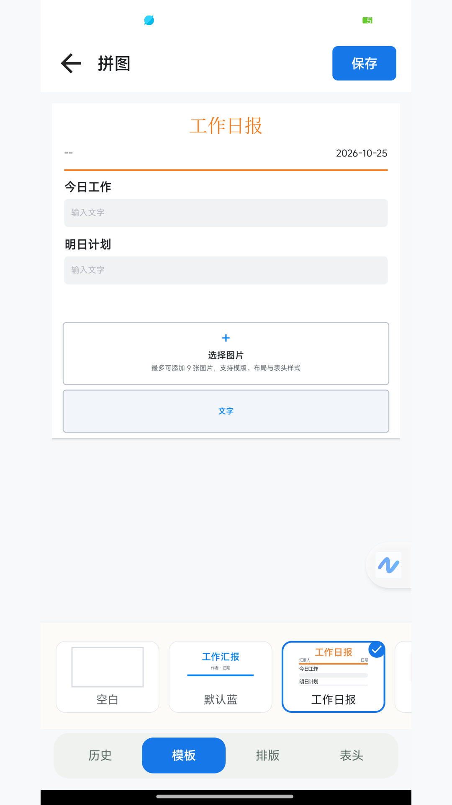

Stamp time, address, coordinates, weather and altitude on every photo and video. Made for check-ins, inspections, site logs and work reports. Your media stays in your own gallery.
./screenshots Privacy Policy Terms of Use// core capabilities
Time, date, address, coordinates, altitude, weather, device model, custom text and logo. Every field can be edited or hidden.
General, Life, Work report, Inspection and Attendance styles. Switch with one tap.
The watermark is burned into the video while recording, and the clock keeps ticking with it.
Front/back camera, zoom, flash, brightness, timer, 3:4 / 9:16 / 1:1 aspect ratios, Smooth / Standard / HD quality.
Daily report, work report, work record and construction log templates. Up to 9 photos, export as image or PDF.
Crop, rotate, brightness, contrast, saturation, plus Mono, Sepia, Vivid, Cool, Warm and Fade filters.
// captured on a real device

See the watermark live in the viewfinder. Time, date, place, coordinates, weather, altitude and device model fill in automatically.

Switch to video mode and the same watermark style applies to your footage, clearly readable even at night.

The watermark is written into every frame as you record. No post-processing needed.

Crop, rotate, adjust colors and apply filters to your shots, then save back to the gallery.

Pick a template, fill in today's work and tomorrow's plan, add up to 9 site photos, and generate a report image or PDF.